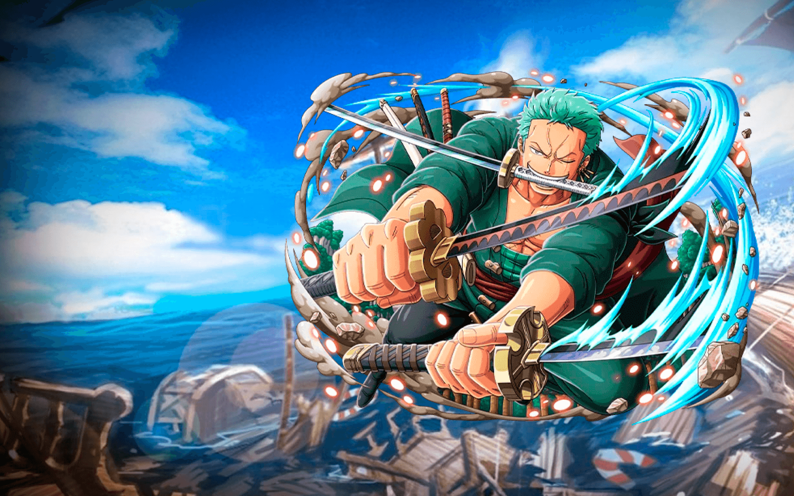
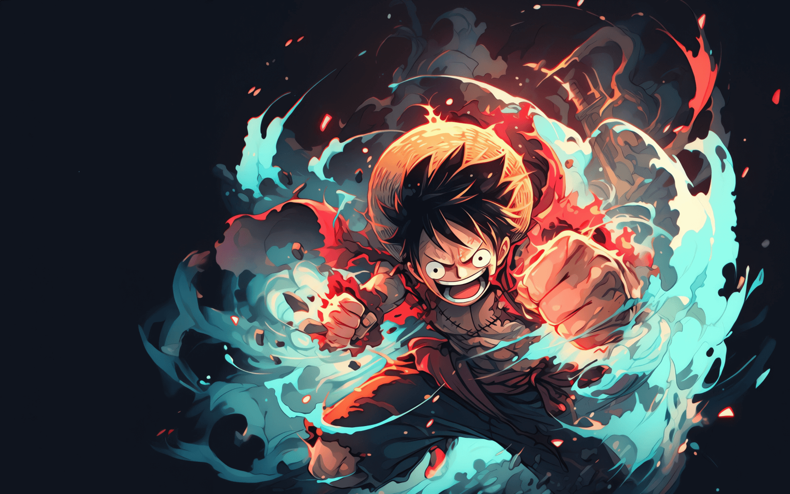
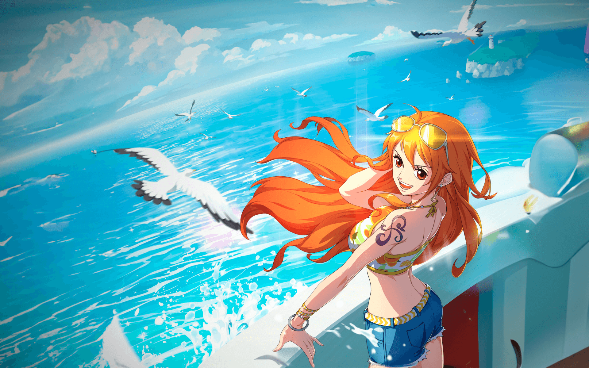
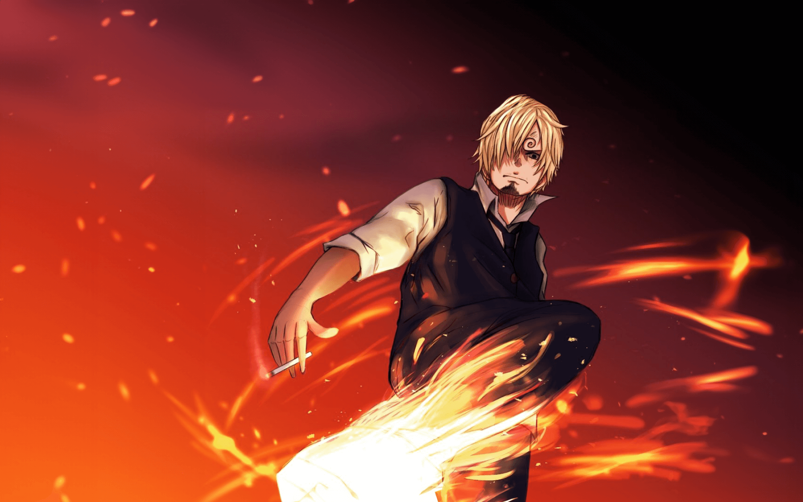

Tony Chopper
Tony Tony Chopper, também conhecido como "Amante de Algodão Doce" Chopper, é o médico dos Piratas do Chapéu de Palha e um dos Oficiais Superiores da Grande Frota do Chapéu de Palha.

Roronoa Zoro
Roronoa Zoro, também conhecido como "Caçador de Piratas" Zoro, é o mestre espadachim e combatente dos Piratas do Chapéu de Palha, um dos Oficiais Superiores da Grande Frota do Chapéu de Palha, e é publicamente reconhecido como o braço direito e número dois do capitão de sua tripulação, Monkey D. Luffy. Anteriormente um caçador de recompensas, ele é o segundo membro da tripulação de Luffy e o primeiro a se juntar a ela, fazendo isso no Arco Romance Dawn .

Monkey D. Luffy
Monkey D. Luffy, comumente conhecido como "Chapéu de Palha Luffy" ou simplesmente "Chapéu de Palha",é o fundador e capitão dos Piratas do Chapéu de Palha. Ele busca o lendário tesouro do falecido Gol D. Roger para se tornar o novo Rei dos Piratas e alcançar um sonho ainda não revelado (atualmente conhecido apenas por sua tripulação, família e amigos mais próximos). Ele acredita que ser o Rei dos Piratas significa ter a maior liberdade do mundo .

Nami
Nami, a "Gata Ladra" é a navegadora dos Piratas do Chapéu de Palha e uma das Grandes Oficiais da Grande Frota do Chapéu de Palha. Ela é a terceira integrante da tripulação e a segunda a se juntar, fazendo isso durante o Arco Orange Town. Ela é a irmã adotiva de Nojiko, após ambas ficarem órfãs e serem acolhidas por Bell-mère.

Sanji
"Perna Preta" Sanji, nascido como Vinsmoke Sanji, e também é o cozinheiro dos Piratas do Chapéu de Palha, assim como um antigo chefe de cozinha do Baratie. Ele também é o terceiro filho e a quarta criança da Família Vinsmoke, tornando-o um príncipe do Reino Germa, até que ele oficialmente os renunciou duas vezes. Apesar de Sanji renunciar ao seu sobrenome Vinsmoke, o Governo Mundial o rotula como parte de seu nome em seu pôster de procurado.